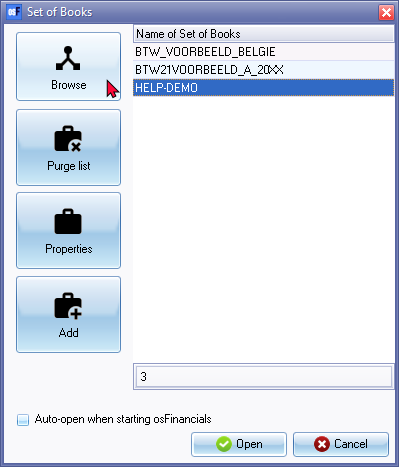
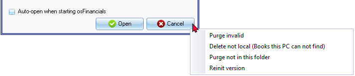
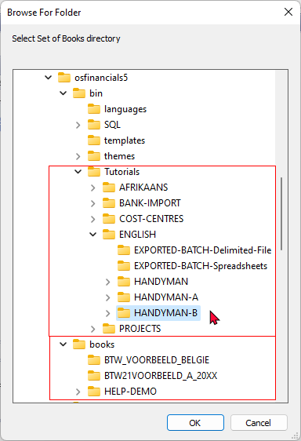
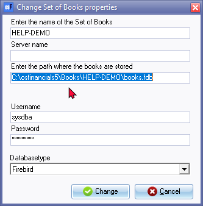
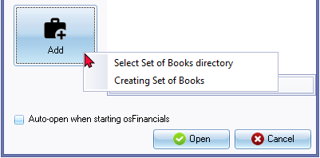
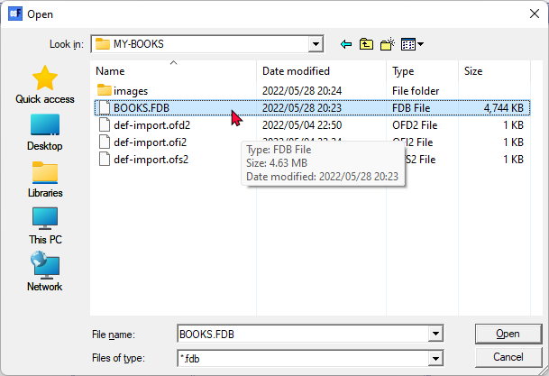
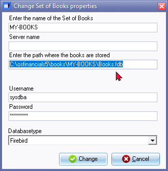

Open Set of Books
|
|
Every time an unregistered version of osFinancials5 is started, the following confirmation message will be displayed: This software is limited to 500 transactions or 500 documents. Please register and buy a licence for osFinancials5! Unregistered versions will allow you to process up to 500 transactions and /or documents. Once this limit is reached, osFinancials5 will not allow any processing of transactions, in batches and/or documents. Once you have registered osFinancials5, you will receive an unlocking code and will be able to process further transactions and or documents. |

|
|
Open a Set of Books in which 500 transactions and or documents have been processed: osFinancials5 the limit of 500 transactions or 500 document is reached! Please register and buy a licence. Once you have registered osFinancials5, you will receive an unlocking code and will be able to process further transactions and or documents. |

|
|
Accessing Budgets (Reports ribbon) in a Set of Books in which 500 transactions and or documents have been processed: This software is limited to 500 transactions or 500 documents! Please register and buy a licence for osFinancials5. Once you have registered osFinancials5, you will receive an unlocking code and will be able to process further budgets. |
To access the Set of Books option in osFinancials, you need to click on the Open icon on the Start ribbon. This option will display a list of all valid Sets of Books (databases) that are located in the "books" folder of the osFinancials5 installation folder. Additionally, it will also show any Sets of Books that are stored in other locations, such as on a different part of the hard disk or on a mapped drive on the network, which have been added to the list. The path or directory of these Sets of Books can be set in the Properties of the Set of Books.
Open Set of Books screen
To open a Set of Books:
- On the Start ribbon, select Open Set of Books (Alt + O). The "Set of Books" screen is displayed:

|
|
Blue - Font colour This indicates indicates that a Set of Books is not located in the same directory (books folder) where osFinancials5 is installed. Instead, it is located elsewhere on your system. |

|
|
Red - Font colour When a Set of Books (which is located elsewhere on your system) is deleted or its folder is moved to a different location, the font color of the Set of Books name turns red. This also happens when the drive or network where the Set of Books is stored becomes unavailable or unmounted. |
|
|
You may right-click on the Cancel button remove invalid Set of Books in the Open Set of Books screen.  |
- Select the Set of Books which you would like to open.
- Click on the Open button.
|
|
If you click on the Cancel button, no Sets of Books will be opened. |
|
|
Year-end confirmation Should you open the Set of Books, and the date of the end of the year, is in the past, a confirmation message will be displayed, for example; This year Ends on 2022/02/28 You need to adjust the Start of the financial year in one of the following options on the Setup ribbon:
|
Icons on Open Set of Books screen
Browse
The Browse icon will allow you to add a Set of Books to the list.
If the Set of Books you want to open is stored in a location other than the "books" folder in the osFinancials5 installation folder, you can use the Browse icon to locate and select it. Clicking on the Browse icon will allow you to navigate to the directory or folder where the Set of Books is stored and select it from there.
To browse and add a valid osFinancials5 Set of Books to the Set of Books list:
- If you click on the Browse button, you may select from any other directory. The Browse for Folder screen is displayed.
- You must pick a valid osFinancials5 Set of Books. If the directory does not contain a valid Set of Books, it will not be added to the list.

|
|
The Books are by default installed in the following directories:
If the set of books for your language and or country, is not available in the books directory, you may select any of the available Firebird Sets of Books and linked languages available as a free download.
|
Purge list
The Purge list icon is used to remove a selected Set of Books from the list, but it does not delete the Set of Books from the directory. It's important to note that you cannot purge a Set of Books located in the osFinancials5 directory (books folder). To remove a Set of Books from the books folder, you need to use the Delete Set of Books option located on the Start ribbon. If you want to remove a Set of Books from the list but keep the Set of Books, you will need to move the entire Set of Books folder out of the osFinancials5 directory using File Explorer or any other file/folder management program.
When you click on the Purge icon, the following confirmation message will be displayed:
"This will seriously affect your Set of Books! Are you sure you want to clear this Set of Books?"
Properties
The Properties icon displays the name of the Set of Books (e.g. "MYBOOKS") and its holding directory in the list.
e.g. C:\osFinancials5\books\MYBOOKS\books.fdb.
- If you select a Set of Books and click on the Properties icon, the following screen is displayed:
 - If you need to change any of the properties for the Set of Books, follow these steps:
- Enter the name of the Set of Books - Enter a valid name for the Set of Books.
- Server - If osFinancials5 is configured as a Multi-user product, enter the server details.
- Enter the path where the Set of Books are stored - Enter the path or directory where the Set of Books is stored on your system..
- Username - Enter a valid username for the Set of Books
- Password - Enter a valid password for the Set of Books.
- Databasetype - Select the appropriate database type from the following options:
- Firebird - This is the default database type for all Sets of Books included in the osFinancials5 installation in the "books" and the "bin/Tutorials" folder. Sets of Books (Firebird database type) may also be downloaded when you create a Set of Books using the "Let osFinancials help you to create a Set of Books?" option.
- SharedDisk (Firebird) - For sharing in multi user setup for multi-user environment for Firebird databases.
- MSSQL - Microsoft SQL server -
- Mysql - Not fully supported.
- Postgress - Not fully supported.
|
Database type - Firebird is the default for all Sets of Books included in the install. You may create MySQL databases (see - My SQL database online manual) and Postgress databases (see - Postgress database online manual). |
- Once done, click on the Change button to save the changes and to exit or close this screen.
Add
If you click on the Add icon, the following two (2) options is displayed:

- Select Set of Books directory - On this screen, you need to enter the name of the Set of Books, Server name, path, user name and password.
- Creating Set of Books - Launch the Creation wizard (Start → Create Set of Books (F10)) on which you may create a set of books, copy a set of books, etc.
To change the Set of Books properties:
- If you click on the Add icon, and select the "Select Set of Books directory" option, the "Open" screen is displayed:

- Select a valid database (*.fdb - Firebird database) on your system and click on the Open button. The "Change Set of Books properties" screen is displayed:
 - If you need to change any of the properties for the Set of Books, enter the following:
- Enter the name of the Set of Books - Enter a valid name for the Set of Books.
- Server - This works, if osFinancials5 is configured as a Multi-user product.
- Enter the path where the books are stored - Enter the path (i.e. directory (folder)) where the Set of Books is stored on your system.
- Username - Enter a valid username for the Set of Books
- Password - Enter a valid password for the Set of Books.
|
Database type - Firebird is the default for all Sets of Books included in the install. You may create MySQL databases (see - My SQL database online manual) and Postgress databases (see - Postgress database online manual). |
- Once done, click on the Change button to save the changes and to exit or close this screen.
Cancel button (right-click context menu)
The Cancel button on the Set of Books screen has a right-click context menu that provides four (4) options:
- Purge invalid - This option deletes Sets of Books that are listed in Red - Font colour on the "Set of Books" open screen, indicating that they are either deleted, moved to another location, or stored on an unavailable or unmounted drive or network.
- Purge not in this folder - This option does not delete the files from the directory. Sets of Books located in the "books" folder of the osFinancials5 directory cannot be purged using this option. To remove them, use the Delete Set of Books option in the Start ribbon.
- Delete not local (Books this PC can not find) - This option removes Sets of Books that are not available on the current device.
- Reinit version - This option updates the database of the selected Set of Books. Once finished, a confirmation message will be displayed.
Database version updated.